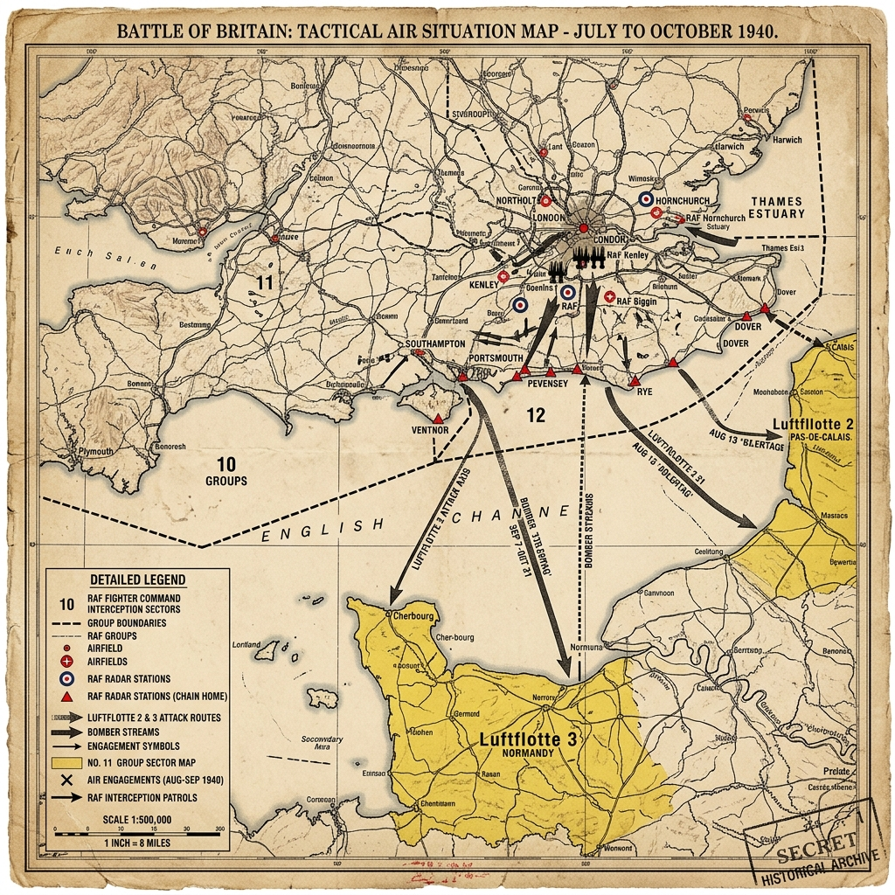

Strategic Context & Geopolitical Buildup
By the summer of 1940, the Allied cause lay in ruins. Following the rapid collapse of France and the evacuation at Dunkirk, Great Britain stood alone against a triumphant Nazi Germany, which had conquered most of Western Europe. Adolf Hitler, hoping to secure a negotiated peace that would allow him to focus on his long-term goal of invading the Soviet Union, offered peace terms. British Prime Minister Winston Churchill defiantly refused, proclaiming that Britain would fight on to the end.
Consequently, Hitler issued Directive No. 16, ordering preparations for Operation Sea Lion—an amphibious invasion of southern England. However, the German army and navy recognized that crossing the English Channel was impossible without first defeating the Royal Navy, which in turn required absolute air superiority to prevent British bombers and fighters from decimating the invasion fleet. The Luftwaffe, under Reichsmarschall Hermann Göring, was tasked with destroying the Royal Air Force (RAF).
Military Doctrines & War Plans
The Luftwaffe's plan, Adlerangriff (Eagle Attack), aimed to systematically destroy RAF Fighter Command. Göring planned to target coastal shipping convoys to draw out British fighters, then attack radar stations and airfields to crush Fighter Command on the ground and in the air. The Luftwaffe relied on its medium bombers (Heinkel He 111, Dornier Do 17) and Stuka dive-bombers, escorted by Bf 109 fighters.
The RAF, led by Air Chief Marshal Hugh Dowding, developed a defensive plan based on preservation. Dowding recognized that the RAF was outnumbered and could not win a war of attrition in open combat. He implemented the 'Dowding System'—the world's first integrated air defense network. This system combined radar tracking, ground observers, and telephone communications to direct Spitfire and Hurricane squadrons to intercept German bombers with maximum efficiency.
Weapons, Technology, and Logistics
The battle pitted two of the war's premier fighter aircraft against each other: the British Supermarine Spitfire and the German Messerschmitt Bf 109E. The Spitfire was highly maneuverable and loved by its pilots, while the Bf 109 was faster in climbs and dives and had a heavier fuel injection system that prevented engine cutouts during negative-G maneuvers.
The most critical technological asset was Chain Home—a network of early warning radar stations along the British coast. It allowed the RAF to detect incoming German raids, estimate their size, altitude, and heading, and scramble fighters to intercept them, avoiding the need for exhausting and wasteful patrol flights.
Opening Moves & Initial Clash
The battle began in July 1940 with the Kanalkampf (Channel Battles). The Luftwaffe attacked British merchant convoys in the English Channel to test British defenses, secure the straits, and lure Fighter Command into battle. Although the RAF lost shipping, they limited fighter losses, refusing to commit large forces.
On August 13, 1940, the Luftwaffe launched Adlerangriff, initiating a series of massive air raids against RAF airfields, radar stations, and communication hubs. A major clash occurred on August 15 ('The Greatest Day'), when the Luftwaffe launched attacks from Norway and Denmark, believing northern defenses were weak. The RAF easily intercepted and decimated these unescorted formations, proving that Britain's air defenses were intact.
The Critical Phase: Airfield Bombings
Between late August and early September, the battle reached its critical phase. Göring focused the Luftwaffe's weight on 11 Group airfields in southeastern England, commanded by Keith Park. Airfields like Biggin Hill and Kenley were repeatedly bombed, destroying sector stations, operations rooms, and aircraft on the ground.
Fighter Command was stretched to its absolute breaking point. The RAF was losing pilots faster than they could be trained, and ground crews worked under constant bombardment to repair runways and keep fighters flying. Had the Luftwaffe continued this focused campaign, Fighter Command might have collapsed, leaving the Channel vulnerable to invasion.
The Strategic Shift: The Blitz
On August 24, a lost German bomber formation accidentally dropped bombs on residential areas of London. Churchill ordered retaliatory RAF raids on Berlin. Although the physical damage was minimal, it outraged Hitler, who ordered Göring to shift targets from RAF airfields to London and other major British cities. This began 'The Blitz'.
On September 7, a massive force of nearly 1,000 German aircraft bombed London, marking the start of the city's ordeal. While devastating for civilians, this strategic blunder saved Fighter Command. It gave the RAF the crucial breathing room to repair airfields, rest pilots, and replenish aircraft reserves, while forcing the Luftwaffe to fly predictable routes over heavily defended areas.
Battle of Britain Day & Victory
The climax of the battle occurred on September 15, 1940, now celebrated as 'Battle of Britain Day'. Göring launched two massive waves of bombers and fighters against London, expecting to crush a depleted RAF. Instead, Keith Park scrambled every available squadron, intercepting the German formations before they could reach their targets.
The RAF shot down 56 German aircraft while losing 29. The defeat proved to the German High Command that the RAF was far from defeated. Two days later, Hitler postponed Operation Sea Lion indefinitely. The Luftwaffe shifted to night bombing campaigns to avoid daytime fighter interceptions, acknowledging that daytime air superiority was unattainable.
The Soldier's Ordeal & Civilian Impact
The RAF pilots, a diverse group including Britons, Poles, Czechs, New Zealanders, Canadians, and Americans, endured intense physical and mental exhaustion. They flew up to five sorties a day, living in constant state of readiness. Winston Churchill immortalized them in his August 20 address to Parliament: 'Never in the field of human conflict was so much owed by so many to so few.'
British civilians in London and other industrial centers faced the horrors of the Blitz. For 57 consecutive nights, London was bombed. Families slept in Tube stations, basement shelters, or Anderson shelters in their gardens. Over 40,000 civilians died, and over a million homes were destroyed, but the bombing failed to break British morale, instead strengthening national resolve.
The Aftermath & Strategic Consequences
The Battle of Britain was Germany's first major defeat of the war. It preserved Great Britain as an independent combatant and a base for future Allied operations. It kept the British Empire in the war and allowed the United States to use the British Isles as a staging ground for the buildup of forces that would lead to D-Day.
For Hitler, the failure meant that when he launched the invasion of the Soviet Union in June 1941, he was forced to fight a two-front war, with the RAF and Royal Navy constantly threating his western flank and tying down valuable Luftwaffe divisions.
Historical Legacy & Long-term Impact
The battle demonstrated the strategic importance of air power and the critical role of radar and command systems in modern warfare. It created a powerful national myth of British resilience ('the Blitz spirit') and established Fighter Command pilots as symbols of heroism.
The contribution of foreign pilots, particularly the Polish 303 Squadron (which achieved the highest kill rate of any squadron in the battle), highlighted the international coalition that defended Britain during its darkest hour.
The Axis Perspective
From the German perspective, the Battle of Britain was marked by hubris, intelligence failures, and mounting frustration. The Luftwaffe High Command severely underestimated British aircraft production capabilities, the efficacy of the radar network, and the resilience of British morale. Hermann Göring had boastfully assured Hitler that the RAF would be crushed within weeks. As German bomber losses mounted terribly against the fierce resistance of the Spitfires and Hurricanes, the morale of the German fighter pilots tasked with protecting them plummeted. They found themselves shackled to slow bombers, stripped of their tactical advantages. The profound frustration of the German fighter aces is perfectly encapsulated by an apocryphal but historically resonant exchange between Göring and the legendary fighter ace General Adolf Galland. When Göring demanded to know what the pilots needed to win the battle, Galland replied with biting sarcasm: "I should like an outfit of Spitfires for my group." The failure to achieve air superiority was a bitter pill, but Nazi propaganda quickly spun the narrative, downplaying the defeat and framing the ongoing "Blitz" against British cities as a continued, triumphant offensive, masking the strategic reality that Germany had been thwarted.
Tactical Map & Theater of Operations
A tactical overview of the airspace divisions and key defense networks during the defense of the United Kingdom:

Figure: Battle of Britain, 1940: Highlighting Fighter Command's No. 10, 11, and 12 Groups defensive sectors, key radar chain stations, and the primary bomber avenues of Luftflotte 2 and 3.
Archives, Primary Sources & Further Reading
For more details and original archival records on the Battle of Britain:
- Imperial War Museums - 8 Things to Know About the Battle of Britain A detailed digital exhibit featuring personal diaries, aircraft statistics, and historical accounts from IWM.
- The Battle of Britain Memorial Official Site The official site of the national memorial to the pilots who fought in the Battle of Britain.
- The National Archives (UK) - Battle of Britain Files Official governmental reports, Dowding's dispatches, and intelligence maps from 1940.